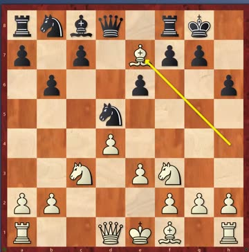
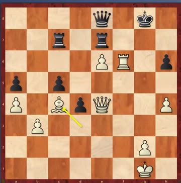

“Spassky stood up and applauded — and nobody filmed it”
That's the term. This was the last chess class of 2026 — back after Thanksgiving and Christmas. So Coach set holiday homework that isn't puzzles:
And be fussy about who you watch. His one instruction: the commentary to follow is Svidler and Leko — “其他的什么网红的都不要看了”, none of the internet-celebrity ones, the ones that are there to be funny.
He went through all six, and the playable boards now carry his answers. Every first move he gave matched the line already stored — three weeks running now.
Four children got all six. Four of the sheet's six turn on the same tactic, and he gave it the best explanation of the year:
And 88 is back on the site because of this class. That diagram had been left off the board page: the photo of it wouldn't come out, and as read it came out winning for White — the opposite of what the sheet prints. The recording settled it. On Coach's screen the square the photo showed as a bishop on d4 is a pawn. One piece, and the position goes from lost to level — which is exactly where “better position, not a win” lands.
D59 Queen's Gambit Declined, Tartakower · World Championship, game 6 · 23 July 1972 · Fischer had White · 1–0
The last of the Fischer story, and Coach saved the best for it. After game 3 the match had swung back: a draw, then Fischer won game 5 with Black. 2½–2½, all square, and this is game six.
1.c4. In his entire career Fischer had opened with the c-pawn twice. He chose the sixth game of a world championship for the third. Spassky's team had spent the days before preparing the Sicilian.
The part that hurts. Spassky's own coach Bondarevsky had made this very variation his life's work, and Spassky had never lost a game in it — but Bondarevsky didn't travel to Reykjavik. On move 14 Fischer played Furman's novelty, the move Karpov's coach had beaten Geller with in 1970. Geller was in Reykjavik, as Spassky's second, and had worked out the answer — 14…Qb7!, giving the pawn back. Spassky hadn't reviewed it, and forgot.
▶ Live board. All 41 moves, read off Coach's own screen:


No fireworks. Coach pointed this out twice: there is one pawn sacrifice in the whole game and nothing else given away. It was still voted the best game of the match. What wins it is 20…d4? — a move that looks active and quietly opens the a2–g8 diagonal for the white bishop. After it, Coach says, Spassky is simply lost and never comes back.
The move worth stealing. At move 34 Fischer plays R1f2 — a rook shuffling one square sideways, doing nothing. Then 35.R2f3, and back again.
Then the applause. Fischer finished with 38.Rxf6, and when it was over Spassky stood up and applauded with the audience. Fischer said afterwards that it was extraordinary sportsmanship. Nobody has ever seen it: Fischer had banned the cameras, so the most famous standing ovation in chess was never filmed. Coach's consolation — the directors of The Queen's Gambit put the scene into the series, with a girl in Fischer's place.
One more thing. At the 1988 Olympiad opening ceremony in Greece, Coach says, 32 ballet dancers re-enacted this game move by move on a giant board. Fischer went 3½–2½ up here and was never caught; the match ended at game 21.
C25 · 1.e4 e5 2.Nc3 · Black's side · from Coach's own study file
Why this one. The Vienna turns up constantly in Bay Area junior events — he named a student in another class who plays nothing else as White. The trap is that it looks harmless.
▶ Live board. Coach's recommendation, all the way:
Two moves to memorise. 2…Nf6, and then after 3.f4 it has to be 3…d5! — not 3…exf4, because after 4.e5 your knight has nowhere good to go. Then 5…f5!, and Coach's verdict is that it's suddenly White who has the problems.
▶ Live board. And if White develops quietly with 5.Nf3:
Don't check — develop. 5…Bc5!, then …Bb4 once White has committed d4, then …c5 to pull the d-pawn away. The bishop pair comes off and Black is perfectly comfortable.